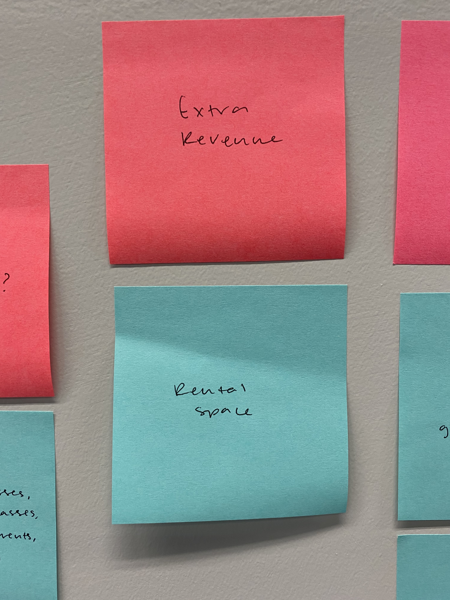
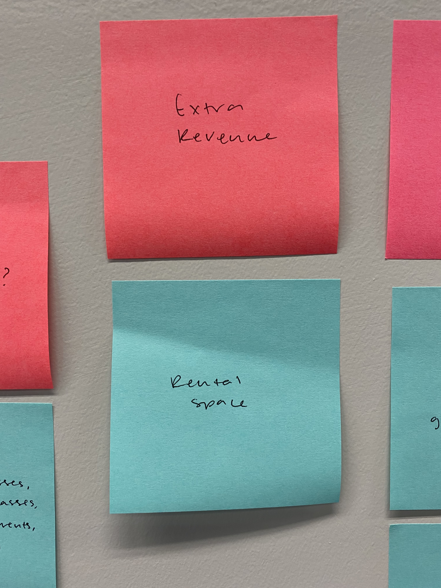

Audience and Goals
What are the goals for this website? How can this website best serve the intended audience?
Audience
I used sticky notes to define the audience that the Anderson Arts Center intends to reach. I began by researching groups of people in the community to determine specific demographics. After gaining a better understanding of the audience, I was able to cater the website to the needs of the audience.
Directly Involved
I started by defining the groups directly involved with the Anderson Arts Center. In my research I found that teachers, children, students, local artists, and people of all ages that are interested in creating or viewing art.

 


Overarching Goals
In order to cater to the needs of the audience, I first explored the needs and goals of the client. From there I was able to identify the goals of the audience when visiting the Anderson Arts Center. Finally, with the priorities of the client and audience in mind, I considered how to combine the two groups and create an effective website.
| Client |
|---|
|
| Audience |
|
| Website |
|
Specific Goals
After gathering the information above pertaining to overarching goals, I focused on crafting specific goals to move this project forward. I broke apart the audience into more specific user groups. Then I focused on details by determining the goals of each user, and the appropriate actions needed to accomplish each goal. By taking these details into consideration, I can create the website to be functional for the user.
| User | Goal | Content/Action |
|---|---|---|
| 25-53 yr. old moms (mothers of children < 18) (Reach families, through mothers.) | Find group activities that the whole family will enjoy, and encourage an appreciation of the arts in their children. | Visit open galleries, attend Arts Center events, sign up for family activities, and pay a fee, if applicable. |
| Mothers (aged 25-35 predominantly) of young children | To occupy young children with an activity, and have children create artwork. | Find classes for young children and sign up, drive the child to the Arts Center, and pay a fee, if applicable. |
| Mothers (aged 39-53 predominantly) of older children (12-18) | To occupy older children with an afterschool activity, cultivate an appreciation of the arts in the child, and encourage an interest or hobby that the child has. | Find and sign up children for art classes, possibly drive the child to the Arts Center, and pay fee, if applicable. |
| Local artists (of any age) | To gain recognition/ notoriety for their artwork (get exposure), to sell their artwork, display their artwork, to enter in juried shows with a chance of winning prize money, gain experience in the process of displaying and selling artwork, use open studios to practice their craft and access supplies provided by the Arts Center, and teach classes. | Prepare artwork to be displayed, have the artwork reviewed by the curator for display, submit prepared artwork to be judged for a juried show, sign up and pay for the use of the open studio, and talk to staff in order to teach classes. |
| Senior citizens (considered 55-60+ years old) | Wish to support the arts financially, wish to view art, attend events surrounding the arts, and support younger family members involved in the arts. | Donate money, purchase artwork, attend events at the Arts Center and sign up. (less likely to do so online. Provide information on how to do this in person), visit galleries, and view the artwork of their grandchildren. |
| Art teachers employed at schools in the area | Seek work over the summer, and have a desire to teach art in addition to current employment. | Apply to work as a teacher for the Summer Art Camp, and talk to staff to teach classes during the school year on weekends. |
I started by defining the groups directly involved with the Anderson Arts Center. In my research I found that teachers, children, students, local artists, and people of all ages that are interested in creating or viewing art.